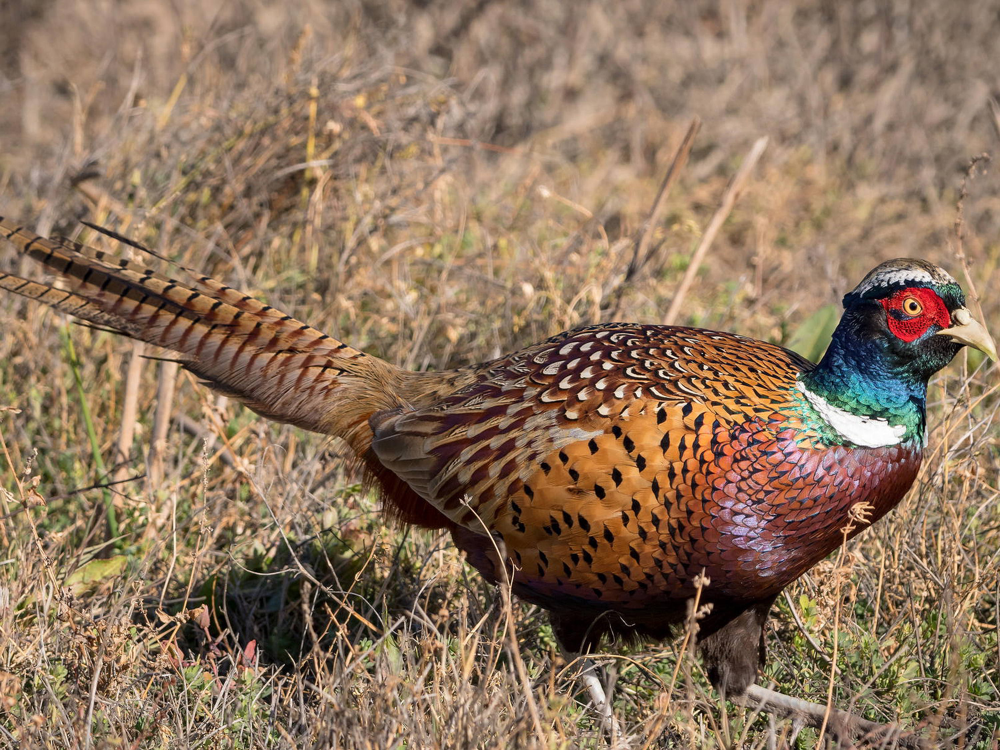
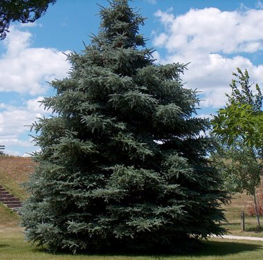

South Dakota
The territory that would become South Dakota was added to the United States in 1803 as part of the Louisiana Purchase.
The first permanent American settlement was established at Fort Pierre by the Lewis and Clark expedition in 1804. White
settlement of the territory in the 1800s led to clashes with the Sioux, as some of the lands had been granted to the
tribe by an earlier treaty. Nevertheless, the territory was incorporated into the union on November 2, 1889, along with
North Dakota.
Due to a controversy over which state would be admitted to the union first, President Benjamin Harrison shuffled the
bills and signed one at random, with the order going unrecorded, though North Dakota is traditionally listed first.
Today, a major part of South Dakota’s economy is fueled by tourism–visitors flock to the state to see Mt. Rushmore,
which features 60-foot-tall sculptures of the faces of Presidents Washington, Jefferson, Roosevelt and Lincoln. Famous
South Dakotans include newscaster Tom Brokaw, senator and vice president Hubert Humphrey and model-actress Cheryl Ladd.
| Date of Statehood |
Capital |
Population |
Size |
| November 2, 1889 |
Pierre |
886,667 |
77,116 square miles |
Motto
Under God, the People Rule
Bird
Chinese Ring-necked Pheasant

Tree
Black Hills Spruce

Interesting facts
-
Agriculture is South Dakota’s top industry, generating one-third of the state’s overall economic activity. Although its
main crops are corn, soybeans, wheat and hay, South Dakota leads the nation in the production of bison and pheasants.
-
In 1874, a military expedition into the Lakota-owned Black Hills led by General George Armstrong Custer confirmed the
existence of gold. Although the mission violated the 1868 Treaty of Fort Laramie, which had guaranteed the Sioux rights
to their sacred territory and established the Great Sioux Reservation, the area was flooded by thousands of miners,
triggering the Black Hills War of 1876.
-
The original design for Mount Rushmore National Memorial included Presidents George Washington, Thomas Jefferson,
Abraham Lincoln and Theodore Roosevelt from head to waist, but Sculptor Gutzon Borglum, who had begun work on the
monument in 1927, died before the work was completed, in 1941, and Congress cut off funding as the nation became faced
with World War II.
-
A memorial to the Lakota leader Crazy Horse in South Dakota’s Black Hills is designed to be the largest statue in the
world when it is completed. Dedicated by sculptor Korczak Ziolkowski and Lakota Chief Henry Standing Bear on June 3,
1948, the mountain carving will extend 563 feet high and 641 feet long. In June 1998, Crazy Horse’s 87-foot head was
completed.